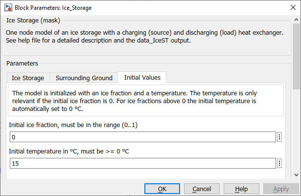

Ice_Storage
Path: CARNOT/Storage/Thermal
Purpose:
Model of a latent heat storage using water/ice als phase change material.
Description:
The model of the ice storage uses two heat exchangers, one for charging
(heating / regeneration) and the other one for discharing (cooling).
The mathematical description of the model can be found in the publications
(FHNW 2013, Wintler, 2014).
Input:
| THBsource | : | Thermo-Hydraulic Bus for charging (heating) the storage (inlet of the source heat exchanger) |
| THBload | : | Thermo-Hydraulic Bus for discharging (cooling) the storage (inlet of the discharging heat exchanger). |
Output:
| THB_source | : | Thermo-Hydraulic Bus for discharging (cooling) the storage (inlet of the load heat exchanger) |
| THB_load | : | Thermo-Hydraulic Bus for discharging (cooling) the storage (inlet of the load heat exchanger) |
Data bus data_IceST:
| Qdot_to_load | : | power of the load heat exchanger given to THB_load (in W) |
| Qdot_earth2ice | : | power from the surrounding ground to the water/ice (in W), positive for heat flow to the ice |
| Qdot_from_source | : | power of the source heat exchanger taken from THBsource (in W) |
| SOC | : | state of charge of the storage (0: completely frozen, 1: completely liquid at 0 °C) |
| Tice | : | temperature of the water or ice in °C |
| Tground_close | : | ground temperature in °C close to the the storage container (0.5 m from the wall) |
| Tground_far | : | undisturbed ground temperature in °C far from the storage container (depends only on depth) |
Remark: be aware that the SOC is 1 for liquid water at 0 °C in the storage, SOC rises above 1 for higher water temperatures !
Parameters and Dialog Box:

Literature
FHNW 2013: Eisspeichermodell,
Institut für Energie am Bau, Fachhochschule Nordwest-Schweiz
Wintler 2014:
Heat Pump, Solar Energy and Ice Storage Systems - Modelling and Seasonal Performance
11th IEA Heat Pump Conference 2014, May 12-16 2014, Montréal (Québec) Canada
Characteristics:
| Direct Feedthrough | : | Yes |
| Sample Time | : | Inherited from driving block |
| Vectorized | : | No |